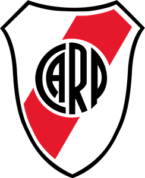
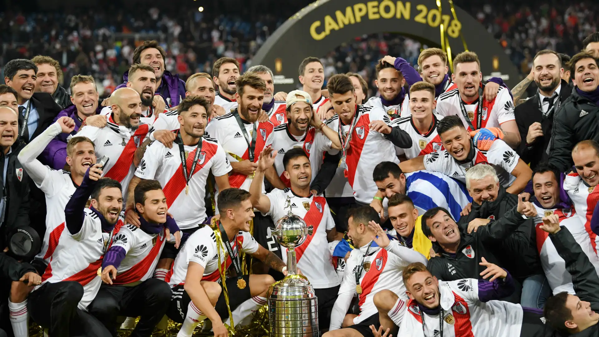

Torneos locales
- Campeonato de Primera División: 1920, 1932, 1936, 1936, 1937, 1941, 1942, 1945, 1947, 1952, 1953, 1955, 1956, 1957, 1985/86 y 1989/90
- Torneo Metropolitano: 1975, 1977, 1979 y 1980
- Torneo Nacional: 1975, 1979 y 1981
- Torneo Apertura: 1991, 1993, 1994, 1996, 1997 y 1999
- Torneo Clausura: 1997, 2000, 2002, 2003, 2004 y 2008
- Torneo Final: 2014
- Liga Profesional de Fútbol: 2021, 2023
Copas nacionales
- Copa de Competencia Jockey Club: 1914
- Copa de Competencia: 1932
- Copa Adrián Escobar: 1941
- Copa Carlos Ibargüen: 1937, 1941, 1942 y 1952
- Copa Campeonato: 2014
- Copa Argentina: 2016, 2017 y 2019
- Supercopa Argentina: 2017, 2021 y 2023.
- Trofeo de Campeones: 2021 y 2023.
Torneos internacionales de Conmebol
- Copa Libertadores: 1986, 1996, 2015 y 2018
- Copa Intercontinental: 1986
- Copa Interamericana: 1987
- Supercopa: 1997
- Copa Sudamericana: 2014
- Recopa Sudamericana: 2015, 2016 y 2019
- Suruga Bank: 2015
Torneos internacionales de AFA/AUF
- Copa Tie Competition: 1914
- Copa Ricardo Aldao: 1936, 1937, 1941, 1945 y 1947

